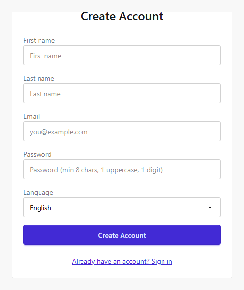
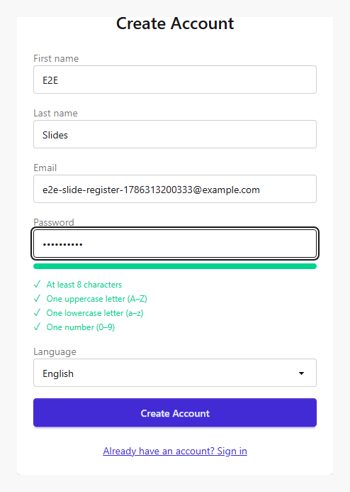
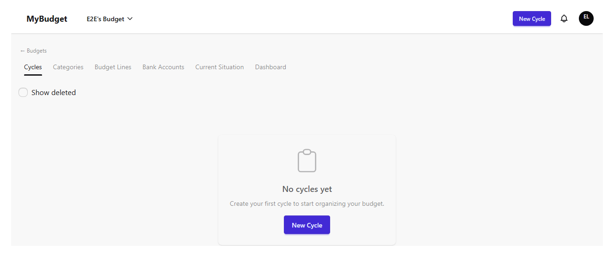
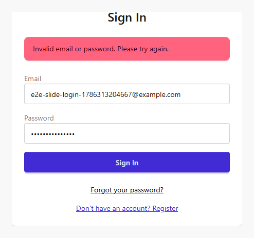
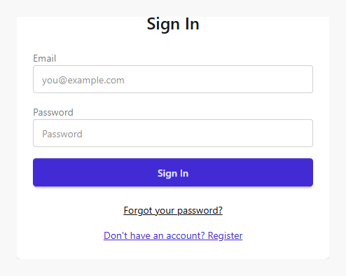

Account & sign-in
MyBudget requires an account before you can create or join a budget. This chapter covers creating an account, signing in, recovering a forgotten password, and signing out.
Creating an account
Open /register and fill in your first name, last name, email, and a password.
The password strength meter enforces the same rule the server checks: at least 8 characters,
including an uppercase letter, a lowercase letter, and a digit. Choose your preferred language
(English or Spanish) — it controls the language of the emails MyBudget sends you, and you can
change it later from your profile.


Submitting a valid form signs you in automatically and takes you straight to your first budget's cycle list — there is no separate email-verification step to complete first.

If the email is already registered, the form stays in place and shows an error instead of creating a duplicate account.
Signing in
Returning users sign in at /login with their email and password.

Wrong credentials keep you on the login page and show an inline error — MyBudget never reveals whether the email or the password was the problem.

Forgot your password?
From the login page, use "Forgot your password?" to open /forgot-password and
enter your email. MyBudget always shows the same "check your inbox" confirmation whether or
not that email is registered, so the form cannot be used to discover which addresses have an
account. If an account exists, the email contains a link to /reset-password where
you set a new password. Reset links expire, and MyBudget will not let you reuse one of your
last passwords.
Signing out
Open the account menu from the avatar in the top bar and choose "Log out". You are returned to the login page and your session is cleared immediately.
